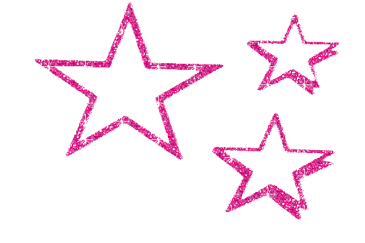

Get happy is founded on the premise that words, as we know them, don’t matter. Only acts of opposition retain value. In resistance, a cohesive, consistent message is fruitless and incoherence is as powerful as cogency. We must trans- form our mindsets. We must embrace the fact that online and of offline are no longer separate, but bleed together into one. We must understand that meaning is no match for solidarity.
The way forward can only be discerned by recognizing the obsolescence of traditional communication and by embracing generative and descriptive languages (of symbols, memes, videos, shitposts and poetry) capable of describing and standing in opposition to this socio-political climate. To resist exclusivity, embrace intersectionality and include new allies this language will open itself in novel ways. This means embracing flexibility, ambiguity and discomfort. It means saying and writing and creating images which do not elicit reaction of “yes!” or “no!” but instead bring out a nervous laugh. “Heh?” It’s that slippage, that tension which is critical. It acts as ice does, slipping into small cracks and breaking apart large boulders. In this manner, we will resist and dismantle harmful systems of ideology using radical irony.

speaker list